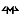

Context
Greg Stafford asked an interesting and correct question over a decade ago, when asking about “who is the Orlanthi sun god?” — but the answer he got is one that caused a lot of confusion, until it was hammered into a compromise, such as this summary by Nick Brooke.
Unfortunately, I still think Greg's answer was wrong in its essentials. One god is the night watchman who stayed behind when Orlanth went on the LBQ — his aspects are twilight and the watch-fire. The reconciliation with Yelmalio is an identification of the twilight aspects, which presumably rejected an origin amongst the Lowfires that the watch-fire implies. This is the god most obviously deserving of the name of Elmal. His devotees are able to use some minor fire magic appropriate to a night watchman's role (the outline myth out of Storm Tribe has no Hill of Gold or other loss of Heat in his story, whereas that loss of such was almost the first thing we learned about Yelmalio in Cults of Prax; ergo my version retains a full range of Fire, if not any great depth), while Yelmalions are not. That aside, any deity around during the Great Darkness really, by definition, cannot be a sun god - the mythic precedent is too strong.
At about the same time that Greg dropped his bombshell, Neil's RQ game almost stumbled across the what I feel is the right answer, when the PCs stumbled across a remote Orlanthi tribe who partook of very austere ways like the Solar monks of the far northern Empire of long ago. Their Orlanth is, I think, much more likely to be the real Orlanthi sun-god.
The obvious Orlanthi Sun-God is, of course, Orlanth in his aspect as the successful completer of the LBQ, restorer of the Sun after the Great Darkness and the Gods' War, Orlanth Lightbearer, or Orlanth Lucifer if you rather. We can see the influence of Orlanth in the fact that what he restored was not the static Sun of the old sterile Fire Tribe Emperor, but a Sun that follows the Storm Spiral, around and around the world, sometimes to the north, sometimes to the south. Orlanth Lucifer would be the god of the Sun, but clearly not the Sun himself. The Orlanthi New Sun, the thing he came back with would be a separate entity - and Ehilm sounds the most plausible name for the sacred fire itself, the light of the day. Maybe — I'm not clear on this myself — it may even be the repentent Emperor in some form
Meanwhile the physical manifestation that corresponds to Elmal is not the Sun, that orb of the daytime — no, it is the spark that the Buseri call Lightfore, and the Praxians, Sun Daughter.
Variant keywords:
[UNFINISHED]
Orlanth Lucifer
Membership Requirement
To be initiated in this aspect, the candidate must have completed the Lightbringer HeroQuest, either as principal or by significantly supporting one of the principals. As a consequence, there are few initiates; and almost all of them are devotees.
Affinities
- Light,
-  Underworld,
- Reconciliation;
Secret
Return from Underworld.
Elmal
Affinities
- Combat as in Storm Tribe, but
- replace Light with
 Fire: Illuminate Surroundings, Tend Watch-fire, Kindle Brand,
Unquenchable Light, Withstand Cold.
Fire: Illuminate Surroundings, Tend Watch-fire, Kindle Brand,
Unquenchable Light, Withstand Cold.
Ehilm, the sacred torch
- Light as Storm Tribe's Elmal,
-
Sunpath: Find Sunpath, Reveal Sunpath, Follow Sunpath, Sunpath
Defence, Rising Leap
- Warmth - Banish Frost, Resist Chill, Ripen Fruit, Cruel Heat
Secret
 Radiant Gaze.
Radiant Gaze.
Happy Fun Legal Text
Glorantha is a trademark of Issaries, Inc. HeroQuest, and Issaries are registered trademarks of Issaries, Inc. Storm Tribe is (presumably — the physical book itself makes no claim) a trademark of Issaries, Inc. Chaosium, Inc. held the trademark of Cults of Prax, but who has it now I really don't know — except that it's certainly not me. The runes used on this site are copyright © 2000–2003 by Issaries, Inc. and are used with permission.
Material Copyright © 2001–2003 Steve Gilham